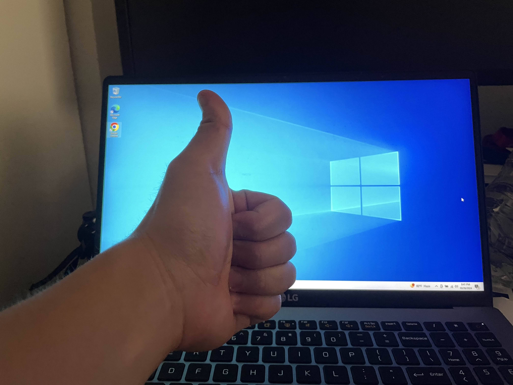

<< Back
Kernel panics, I panic
Reflecting on the first major crisis in my Linux journey; alternatively, learning the hard way about operating systems.
18 October 2024
Contents
So here's the situation. I have this 17-inch LG Gram that's been chugging along with me as I get through college. Windows 10 came in the box (this was before Windows 11 became available). By the summer of 2024, I had just finished my post-junior-year internship in cybersecurity, and I was feeling cocky. I decided the likes of Windows (derogatory) were beneath me, and I wanted to switch to Linux. I chose Mint as my distro, since it seemed the friendliest to a beginner like myself.
This ended up working just fine. I got a 16GB SanDisk USB, made it into a bootable stick with Mint 22 on it, then booted up my laptop with it. The install went ahead, and I was now on Linux.
Fast forward a few months, to now, in October. My experiences with Linux have been great, and fascinating. Up to this point I'd only really played with Kali in VMs (because I was forced to for a few classes) and my memory of the terminal commands had come and gone like a flash of light.
But there were annoyances. Like it or not, Windows is still one of the dominant OSs, and I reached points where I needed Windows to run this or that app. My photography hobby, for instance, had me yearning for Lightroom Classic — an annoying, but powerful and unmatched, tool that is not and probably never will be available on Linux.
(This was an entire rabbit hole of its own, which led me to this dead end of a Reddit thread, where one particularly heated user wrote — in response o a question as to whether Adobe products would ever be made available on Linux:
God I hope not. Adobe products are greedy, bloated parasites. Adobe can't even make a decent lightweight PDF reader, ffs. Every app they produce is a giant tentacled system designed to entrap you in their slimy embrace and pick your pockets. Adobe is antithetical to everything Linux and FOSS stands for.
But I digress.)
I tried to ignore it for as long as I could, but inevitably I reached the dreaded conclusion: I missed Windows. I wanted it back.
What has ensued in the past 72 hours has been nothing short of a disaster as I've tried to work out how to get Windows on my system again. But in the process I've actually learned quite a bit about how operating systems work and present themselves to end users. But we'll get to that later.
When I had first installed Mint, it had quite kindly given me the option to dual-boot it alongside my then-existing Windows OS. But I was blindsided, and I declined this option. That was the first mistake.
The calm before the storm
In the time since I initially installed Mint, from time to time I had halfheartedly searched for ways to retroactively dual boot Windows on top of my now-default Linux. There were some tutorials, and I scrolled through them, but I'd never been particularly motivated to follow through with them. I was busy (classic excuse), and besides, I was doing quite fine without them.
But now, though, the worst of midterm season was over, so I decided to finally sit down and get this done.
Initially, my approach was to get a proper bootable USB with a Windows disk image burned onto it, so that whenever I plugged in that USB it would boot as Windows — and presumably without that USB it would just boot Linux Mint as usual. (In retrospect, this was extremely naive, to put it kindly.)
I grabbed the same 16GB USB I'd used to install Mint, and I set out to have Windows burned onto it. Somewhere down the rabbit hole, I'd learned about Ventoy, a tool that allows you to use a single USB to load up any number of OSs. So I formatted the USB, installed Ventoy, and copied over a Windows 10 ISO per the instructions.
This actually worked, at least in the beginning. When I booted the system with the USB in it, I could see the Ventoy launch screen, where I was prompted to select my Windows ISO. That led to the proper Windows installer.
This is where the issues began. My hard drive had two partitions: an EFI partition, which has all the instructions for the system to actually boot the operating system (Linux in this case); and a filesystem. Neither partition would accept a Windows install. I tried everything*, but nothing worked. So I gave up, took out the USB, and restarted to boot Mint again.
The first panic
Staring back at me instead was a hapless "Boot Menu," which gave me two options: "ubuntu" or meaningless-string-of-numbers (the name of my hard drive, to be exact, which had nothing on it anyway). I selected "ubuntu." It just returned to the Boot Menu. I selected "ubuntu" again. It just returned to the Boot Menu again. I selected "ubuntu" a third time. Same thing.

Imagine this but with the two useless options I was given.
I had hit a wall. My two options were either fail to boot Windows or fail to boot Linux Mint. My laptop was functionally a dud.
After some minutes of internal screaming, I decided not all hope was lost — I could start from scratch and boot up a fresh copy of Linux Mint. It was already getting late at night by this point, so I went to bed.
The second panic
The next morning, I felt refreshed and confident enough to try again. I borrowed my roommate's computer to get a new copy of Linux Mint (which he somehow trusted me to do, thankfully) and tried booting my own laptop up with that new copy.
For approximately five seconds, I felt a glimmer of hope. A launch screen gave me to option to launch Mint 22, normally or in compatability mode. I selected normal mode.
After some frantic log output, this is what greeted me:
ACPI Bios Error (bug): Could not resolve symbol [\_SB.PCIO.GPP7.UPOO.DP40.UP00.DP681], AE_NOT_FOUND (20210331/dswload2-162)
ACPI Error: AE_NOT_FOUND, During name lookup/catalog (20210331/psobject-220)
Initramfs unpacking failed: Decoding failed
Failed to execute /init (error -2)
Kernel panic - not syncing: No working init found. Try passing init= option to kernel. See Linux Documentation/admin-guide/init.rst for guidance.
CPU: 1 PID: 1 Comm: swapper/0 Not tainted 5.13.0-25-generic #26~20.04.1-Ubuntu
Hardware name: PCSpecialist Amd Am5/TUF GAMING X670E-PLUS WIFI, BIOS 1654 08/25/2023
Call Trace:
dump_stack+0x7d/0x9c
? rest_init+0x70/0xba
panic+0x101/0x2e3
? putname+0x4a/0x50
? rest_init+0xba/0xba
kernel_init+0x10a/0x116
ret_from_fork+0x22/0x30
Kernel Offset: 0x37a00000 from 0xffffffff81000000 (relocation range: 0xffffffff81000000-0xffffffffbfffffff)
---[ end Kernel panic - not syncing: No working init found. Try passing init= option to kernel. See Linux Documentation/admin-guide/init.rst for guidance. ]---
So the kernel was panicking — and so was I, again. I tried again in compatability mode, and got the same thing. I turned UEFI Secure Boot off, and got the same thing.
This is when I came to a realization: When I was trying to install Windows the first time, in pressing any button that was available to me trying to make things work I had formatted the EFI partition of my hard drive. Which meant, the laptop had lost all instructions on connecting to the kernel and was therefore stumped.
A miraculous, but temporary, fix
I'll skip over the several hours of frantic searching of forums that followed. After that, though, I had managed to find a solution that would goad the laptop to find the kernel and set it as the root
Boot Linux Mint via the USB.
When the launch screen appears (asking to choose between booting Mint in normal mode or compatability mode), do not select any of those, and instead press "c" to enter the GRUB command line.
Once in the command line, type
lsto see what drives are on the system.Then
lseach of those drives to see which of them contains avmlinuzfile, i.e., the compressed file containing the kernel. For example, mine was contained in(hd0,gpt2).Then I continue as follows:
grub> set root=(hd0,gpt2) // sets the root filesystem grub> set prefix=(hd0,gpt2)/boot/grub // defines the location at which grub should look for the configuration files grub> insmod normal // load the "normal" module, which is needed to boot in normal mode grub> normal // boot in normal mode
This handholding worked well enough for the next few days, where I was too busy with other things to care about the workaround; and besides, I didn't need to shut my device down and boot from scratch often enough where it really mattered.
But it did feel scuffed, so after those few days I sought a proper fix.
The actual fix
I searched again, this time with actual effort, for a way to properly dual-boot Windows on my existing Linux machine. This time, I struck gold: a blog by Abhishek Prakash (posted 9 October!) gave step by step instructions that actually worked.
The blog post itself is quite long; but the key point is this: I needed to make both a functioning Linux Mint USB and a Windows USB (the latter via Ventoy), and then use the Linux Mint USB to boot a temporary new run of Linux, where I could partition my hard drive to make space for Windows. If I were to try that in my current in-use Mint OS, the hard drive would be mounted (since the Mint OS is using it to run) and would not be available to partition.

Then I went ahead with the Windows install, after which
I updated GRUB to detect the new Windows (sudo update-grub. Then I rebooted, and — finally — the GRUB
bootloader appeared, with two options: boot Linux, or
boot Windows.

(Abhishek Prakash)
Conclusion
The nightmare was over, and I had the added benefit of learning valuable lessons about the intricacies of dual-booting, and the importance of understanding how operating systems interact with hardware. I also was able to internalize what I had known all along: that for every issue there's a solution for it on the internet — whether it's a forum post from thirteen years ago or a blog post from last week. At this stage, I'd love to learn more about the workings of UEFI and BIOS; if I do move on from Mint to other Linux distros, this process would be something to revisit all over again. If or when that does happen, I'll make another post about that process.
In the meantime, below is my declaration of victory:
